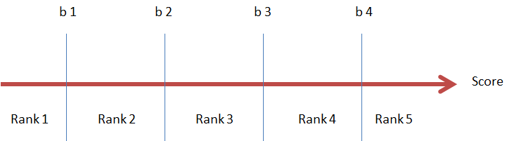
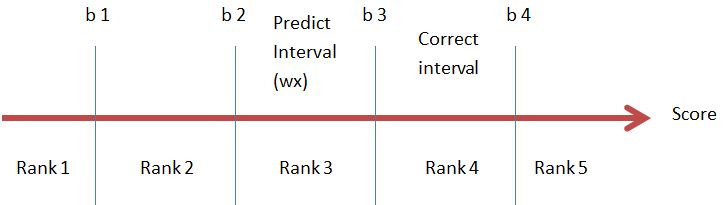
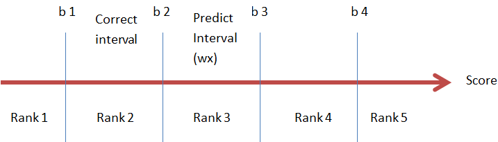
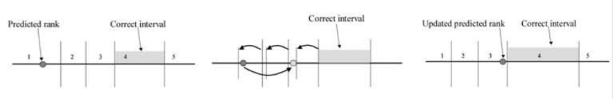
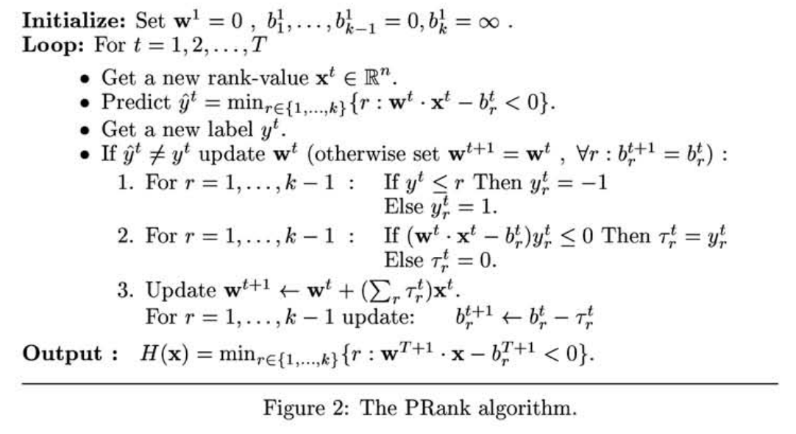

LTR模型可以分为 point-wise、pair-wise、list-wise三类，Prank算法属于point-wise模型。
Pointwise可以用于推荐系统中也可以用于IR中。
以Pointwise在IR中的应用为例，它处理对象是doc-query pair，将doc-query的match信息转化为特征向量后，机器学习系统根据训练得出的模型对doc-query pair进行打分，打分的顺序即为搜索排序的结果。计算打分的公式如下：
$$
\mathrm{score} = \mathbf w \cdot \mathbf x
$$
其中$\mathbf w$为特征各维度的权重，$\mathbf x$为doc-query match信息转化为的特征向量。
在Ranking问题中我们使用的训练样本的label值不是分数，而是一个具有强弱分级的label，如Perfect > Excellent > Good > Fair > Bad 这样具有强弱关系的五级label。为了将score映射到分级label，需要设置5个阈值来区分score的label。如果score落在某两个相邻阈值之间，则划分为相应的label，常见算法包括：PRank、McRank。如下图所示为PRank算法示意图：

算法思想
数据：$X_{T \times n}$ ， $y， y \in {1, 2, 3, \dots, k}$， 即训练样本量为$T$， 特征维度为n，$y$共有k个等级的取值。
PRank的目标是训练一个ranking rule H : $R^n \rightarrow y$ ，即，将样本特征投影到$k$个等级上。$H$ 定义如下：
$$
H(\mathbf x)=\min_{r \in {1, 2, 3, \dots, k}}\{r: \mathbf w \cdot \mathbf x - b_r < 0 \}
$$
其中：$\mathbf w$ 和 $b_r, r \in {1, 2, 3, \dots, k}$ 是模型参数。 $ \mathbf w \cdot \mathbf x$ 就是上文中所说的score，$k$ 个 $b_r$ 就是上文所说的阈值，$b_1 \le \dots \le b_{k-1} \le b_k = \infty$ 。如上文所述如果一个样本满足$b_{r-1} \lt \mathbf w \cdot \mathbf x \le b_r$ ，则该样本的预测rank值为$r$，即，$\hat y = H(\mathbf x) = r$。
模型参数估计
PRank模型存在两组参数$\mathbf w$ 和 $b_r, r \in {1, 2, 3, \dots, k}$ ，只要能将这两组参数确定下来，就大功告成。下面讲解参数的确定过程。PRank更新参数的方法类似于随机梯度下降法，即，每当预测错误一个样本后，就更新参数。
对于一个样本$(\mathbf x, y)$ 和模型参数$\mathbf w$ 和 $b_r, r \in \{1, 2, 3, \dots, k\}$ 。如果模型能够正确预测，则 :
$$
\begin {align}
& \mathbf w \cdot \mathbf x \gt b_r , r \le y-1 \\
& \mathbf w \cdot \mathbf x \lt b_r , r \ge y
\end {align}
$$
如上所述，$y$的取值是从集合$\{1, 2, 3, \dots, k\}$ 中选取。模型引入辅助变量$s$(原文中依然使用$y$，我认为可能产生符号混淆，所以改用$s$) ，
$s$是一个向量，长度为$k-1$ ， $s$ 与 $y$ 是一一对应的(类似于多分类问题中，使用onehot编码将label向量化)。对于样本 $(\mathbf x, y)$来说，s的各维度值定义如下：
$$
\begin {align}
& s_r = +1 , r \le y-1 \\
& s_r = -1, r \ge y , r \lt k
\end {align}
$$
例如当 $k=5$时，$y$的取值与$s$的关系如下：
$$
\begin {align}
& y=1 \Leftrightarrow s=[-1, -1, -1, -1] \\
& y=2 \Leftrightarrow s=[ +1, -1, -1, -1] \\
& y=3 \Leftrightarrow s=[ +1,+1, -1, -1] \\
& y=4 \Leftrightarrow s=[ +1,+1,+1, -1] \\
& y=5 \Leftrightarrow s=[ +1,+1,+1,+1]
\end {align}
$$
对于样本$(\mathbf x, y)$来说， 对于所有的$r \in \{1, \dots , k-1\}$ ：
- 如果模型预测结果是正确的，则$s_r\cdot (\mathbf w \cdot \mathbf x - b_r ) \gt 0$，此时参数不需要更新
- 如果模型预测结果是错误的，则存在$s_r\cdot (\mathbf w \cdot \mathbf x - b_r ) \le 0$，此时需要更新参数
对于特定的$r$，如果$s_r\cdot (\mathbf w \cdot \mathbf x - b_r ) \le 0$， 则说明score值$\mathbf w \cdot \mathbf x$ 落在了阈值$b_r$的错误的一侧，为了改正这个错误的预测，只需要将$\mathbf w \cdot \mathbf x$和$b_r$相对移动就能完成对于参数$\mathbf w$ 和 $b_r$ 的更新。更新公式如下：
对于$s_r\cdot (\mathbf w \cdot \mathbf x - b_r ) \le 0$：
$$
\begin {align}
& b_r = b_r - s_r \\
& \mathbf w = \mathbf w + s_r \cdot \mathbf x
\end {align}
$$
当$y=4$ ，预测值落在了Rank 3 范围内时：$s_ 3= +1$ ，此时需要将$b_3$向左移动， $\mathbf w \cdot \mathbf x$向右移动。
$$
\begin {align}
& b_3 = b3 - s_3 = b3 - (+1) \\
& \mathbf w = \mathbf w + (+1) \cdot \mathbf x \Leftrightarrow \mathbf w \cdot \mathbf x = \mathbf w \cdot \mathbf x + (+1) \mathbf x^2
\end {align}
$$

当$y=2$ ，预测值落在了Rank 3 范围内时：$s_ 2= -1$ ，此时需要将$b_2$向右移动， $\mathbf w \cdot \mathbf x$向左移动。
$$
\begin {align}
& b_2 = b2 - s_2 = b3 - (-1) \\
& \mathbf w = \mathbf w + (-1) \cdot \mathbf x \Leftrightarrow \mathbf w \cdot \mathbf x = \mathbf w \cdot \mathbf x + (-1) \mathbf x^2
\end {align}
$$

如果有存在多个$r$ 使得$s_r\cdot (\mathbf w \cdot \mathbf x - b_r ) \le 0$时，更新过程如下图所示：

实现流程
PRank算法比较简单，基本流程如下所示：

实现代码
以下为PRank算法的Python实现代码
note：由于实际环境中我们使用的rate是从0开始的，如5级使用的是$\{0, 1, 2, 3 ,4\}$ 来做标记，所以下面的代码和上文中的论述有一点出入。
1 | import numpy as np |
sklearn estimator版
1 | import numpy as np |